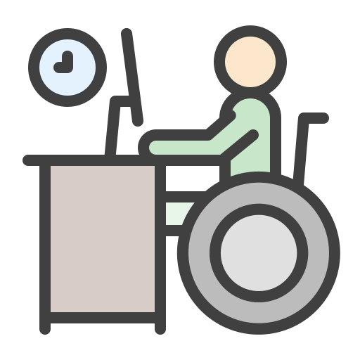

Integração de Tecnologia na Sala de Aula
Integrar a tecnologia na sala de aula envolve incorporar dispositivos como computadores, tablets e quadros interativos, bem como aplicativos educacionais, para enriquecer o processo de aprendizado. Isso pode incluir a criação de apresentações interativas, simulações e atividades colaborativas online para envolver os alunos em um ambiente de aprendizado digital.
Avaliação Digital e Ferramentas de Feedback
Utilizar plataformas de avaliação digital permite aos professores criar questionários, testes e avaliações online. Além disso, ferramentas de feedback permitem fornecer avaliações imediatas aos alunos, identificando áreas de melhoria e reforçando os pontos fortes.
Ensino à Distância e Plataformas de Educação Online
Com a educação online, os professores podem criar cursos interativos, disponibilizar recursos educacionais e realizar aulas ao vivo, alcançando alunos em qualquer lugar do mundo. Plataformas como Moodle, Google Classroom e edX oferecem uma variedade de recursos para facilitar o ensino à distância.
Segurança Online e Cidadania Digital
Ensinar sobre segurança online inclui instruir os alunos sobre proteção contra vírus, senhas seguras, privacidade e reconhecimento de ameaças online, como phishing. A cidadania digital abrange ética online, comportamento responsável nas redes sociais e combate ao ciberbullying.
Gamificação na Educação
A gamificação utiliza elementos de jogos, como recompensas, desafios e rankings, para motivar os alunos. Isso pode incluir jogos educacionais, competições de conhecimento e sistemas de pontos para incentivar a participação ativa dos alunos na aprendizagem.
Inteligência Artificial na Educação
A inteligência artificial (IA) na educação inclui chatbots de ensino, sistemas de tutoria inteligente e plataformas de aprendizado adaptativo. Essas tecnologias personalizam o ensino, oferecendo aos alunos experiências de aprendizado adaptadas às suas necessidades individuais.

Desenvolvimento de Habilidades de Programação
Ensinar habilidades de programação, desde conceitos básicos até linguagens de programação como Python e Scratch, ajuda os alunos a desenvolverem habilidades lógicas, resolução de problemas e pensamento computacional, preparando-os para futuras carreiras em tecnologia.

Tecnologia Assistiva e Inclusão Digital
Tecnologias assistivas incluem leitores de tela, teclados especiais e softwares de reconhecimento de voz, ajudando alunos com necessidades especiais a acessarem conteúdo digital. A inclusão digital envolve garantir que todos os alunos tenham acesso igualitário a dispositivos e recursos tecnológicos.

Uso Responsável de Dispositivos Móveis em Sala de Aula
Estabelecer diretrizes claras para o uso de smartphones e tablets na sala de aula é essencial. Os professores podem aproveitar esses dispositivos para atividades educacionais, mas também devem ajudar os alunos a entender os limites, minimizando distrações durante o aprendizado.
Criatividade e Produção de Conteúdo Digita
Capacitar os alunos a criar conteúdo digital, como vídeos, podcasts e blogs, estimula a criatividade e desenvolve habilidades de comunicação. Isso envolve o uso de ferramentas de edição, técnicas de storytelling e compreensão dos aspectos éticos e legais da produção de conteúdo online.